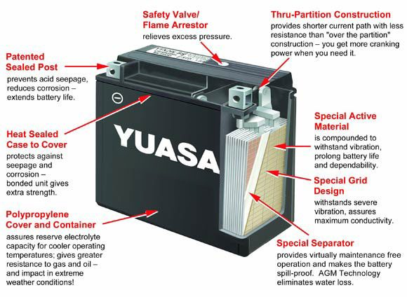

Home mechanic (basic tools) · Time: 20 to 40 min, plus first charge (estimate)
Fit a new battery when the old one is swollen, leaking, cracked, or will not hold a charge after a full charge. Before you buy, test the charging system if you can: a faulty regulator will kill a new battery too.
Safety
- Glasses and gloves on. Battery acid burns.
- Key OFF. Do not unplug the battery while the engine or ignition is on: the voltage spike can damage the regulator and the ECU (engine computer) (K-Light 125 manual).
- Remove the negative (−) cable first and fit it last, so a spanner touching the frame cannot cause a short.
- A swollen, leaking or hot battery may spill acid or, if lithium, catch fire. Lift it out upright, keep it outside, and take it to a battery recycler. Do not put it in household rubbish.
You need
- The correct battery. Check the old label: size code, voltage, capacity (Ah), terminal positions and type. K-Light 125: YTX7A-BS, 12 V 6 Ah.
- Check that the new battery fits the tray and the cables reach the terminals with + and − on the correct sides.
- Ask before changing type. A sealed (AGM) battery should not be replaced with an old style flooded battery on a bike made for sealed ones (K-Light 125 manual). A lithium battery is only suitable if your bike maker and the battery maker say so, and it needs a lithium charger.
- A new "dry" or acid pack battery must be filled and charged before use. A factory activated battery may still need a charge: check its voltage.
Steps
- Key OFF. Put the bike on the centre stand or another firm stand.
- Remove the cover. K-Light 125: left side cover.
- Undo the negative (−) cable first, then the positive (+).
- Remove the vent tube if there is one, then the strap or holder, then lift the battery out upright.
- Clean the tray and the cable ends. White or green powder: scrub with a little baking soda in water, rinse with clean water and dry. See Clean and tighten battery terminals.
- Check the cables for cracks, melted insulation or loose crimps. Replace damaged cables.
- Prepare the new battery as its instructions say (fill if needed, then charge). Measure it: it should read the "charged" value. K-Light 125: about 13.1 V. Use Test and charge a 12 V battery.
- Put the battery in the tray the right way round. Fit the holder.
- Flooded battery: fit the vent tube with no kinks, routed away from the chain and frame. Acid from a blocked or misrouted tube rots the chain and frame.
- Connect the positive (+) first, then the negative (−). Tighten firmly; do not crack the terminal.
- Put a thin film of grease on both terminals, never on the case.
- Refit the cover. Turn the key ON and check that the lights and dashboard work.
Check your work
- The engine cranks strongly.
- The terminals cannot be turned by hand.
- No cable rubs on the frame or can touch the other terminal.
If it did not fix the problem
- New battery flat again within days: A new battery goes flat quickly.
- Battery boils or swells again: Battery overcharges and bulbs blow.
- Still slow to crank: Engine turns over slowly.
Reference values (K-Light 125)
| Item | Value | PDF page |
|---|---|---|
| Battery | YTX7A-BS, 12 V 6 Ah | 76 |
| Fully charged (20 °C) | 13.1 V | 59 |